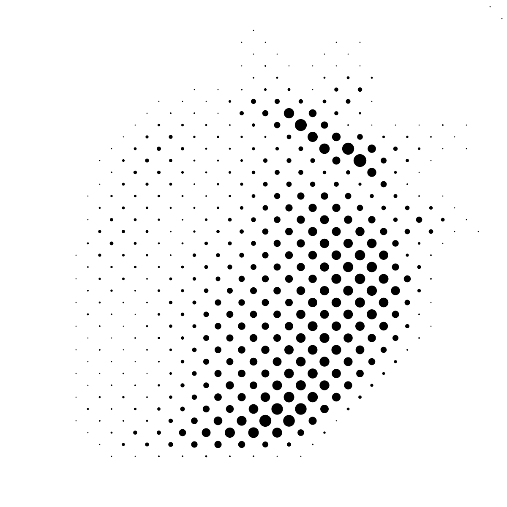
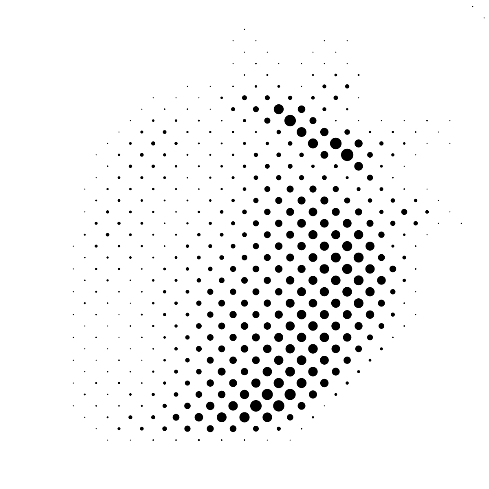

First you start off by finding an image on google, next you turn it into CYMK format using photoshop.
Once you have your 4 CYMK pages printed, out you begin tracing to trace them using the appropriate color for each sheet
 

The final result should look something like this.